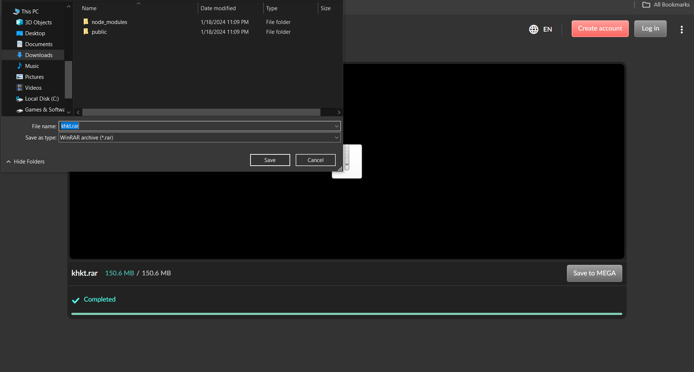
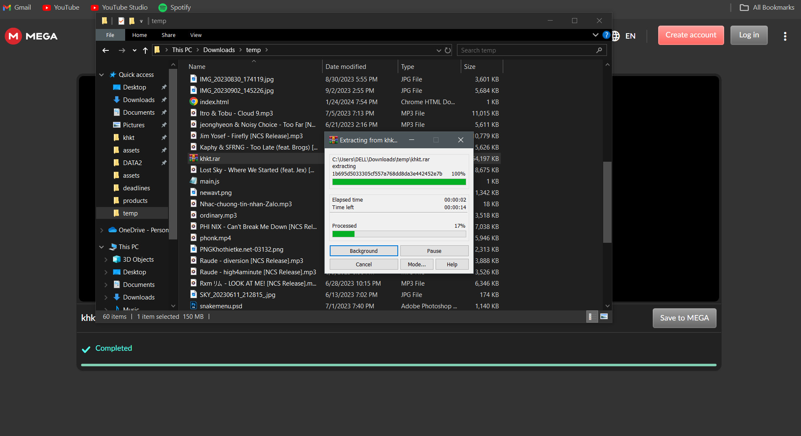
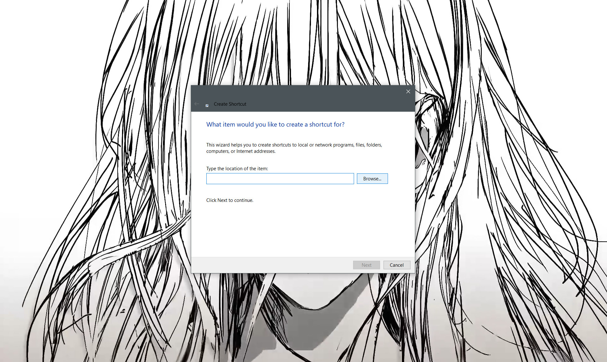
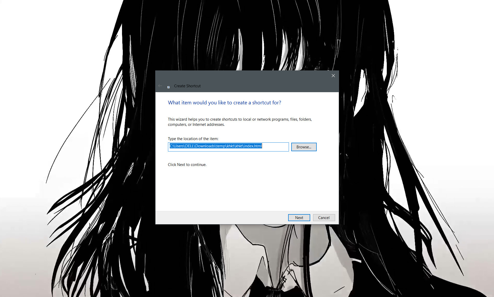
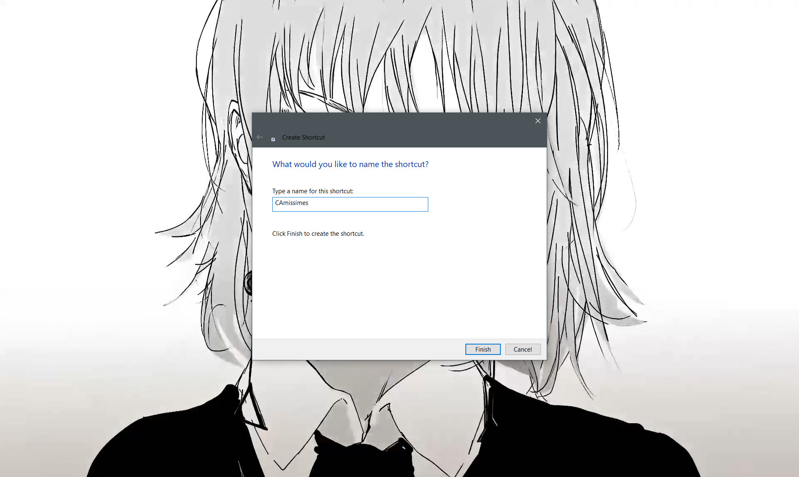
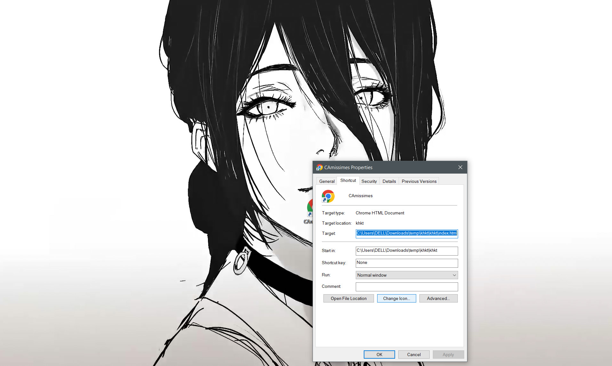
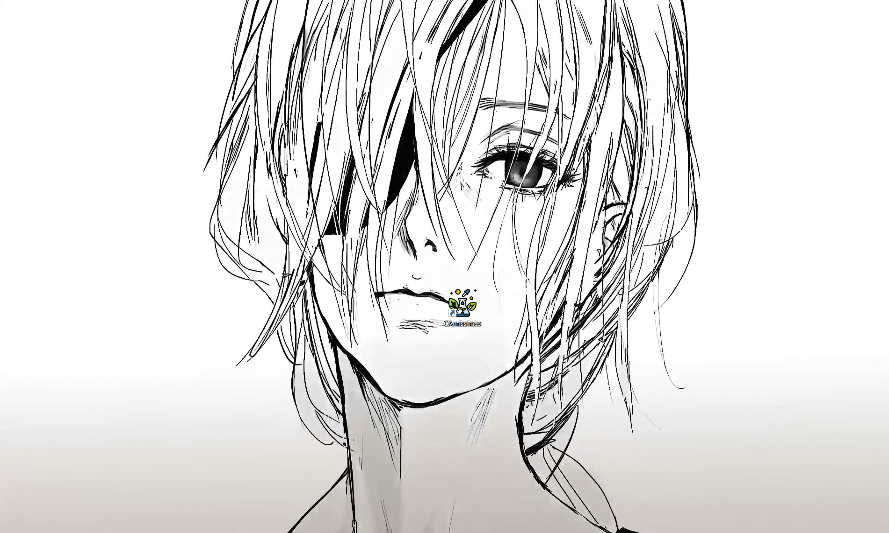

Home
Download
How to download?
- Click the Download at the top of the screen
- The page will automatically switch to the interface as shown (click on the image to see more clearly)

- Click on the Download (green)
- After the green bar finishes running, the interface as shown will appear

- Select where to store the file then click Save (lower right corner)
- Reopen the archive and right-click on the downloaded file, select extract to + file name

- Wait

- File after decompression

- Open the folder and select the index.html file to run

- You can also create Shortcut for faster access
- Go to the main screen, right-click and select New then select Shortcut

- Select Browse

- Find the index.html file in the unzipped folder

- Select next

- Rename index.html to CAmissimes and click Finish

- Once created, right-click on the newly created shortcut and select Properties

- Select Change Icon...

- Click Browse right-click on the newly created shortcut and select icon.ico file

- Select Open then OK then select Apply then select OK again
- Complete!

- From now on, you can quickly access it by double clicking on the newly created shortcut.